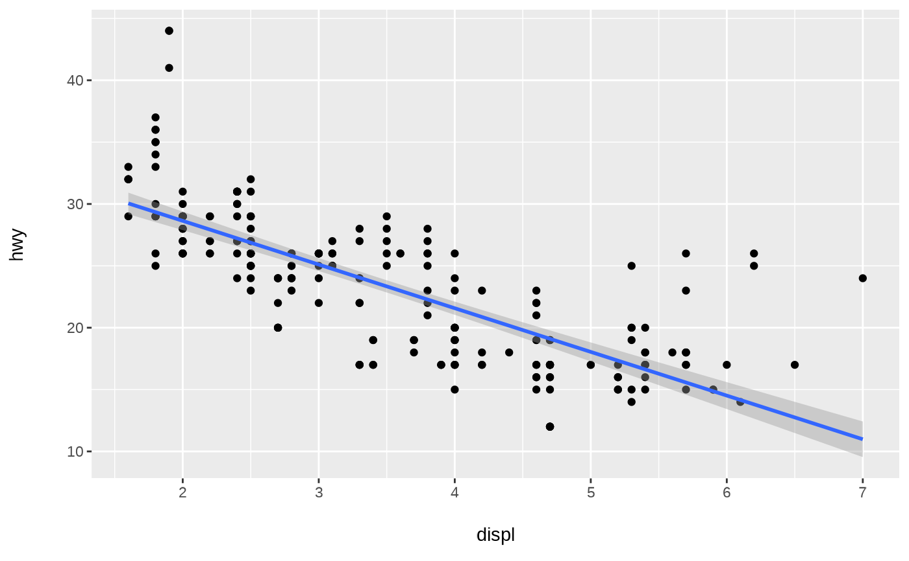

A wrapper for ggplot2::geom_smooth() that sets method to lm() and formula to y ~ x.
Usage
geom_lm(
mapping = NULL,
data = NULL,
position = "identity",
...,
method = "lm",
formula = y ~ x,
se = TRUE,
na.rm = FALSE,
orientation = NA,
show.legend = NA,
inherit.aes = TRUE
)Arguments
- mapping
Set of aesthetic mappings created by
aes(). If specified andinherit.aes = TRUE(the default), it is combined with the default mapping at the top level of the plot. You must supplymappingif there is no plot mapping.- data
The data to be displayed in this layer. There are three options:
If
NULL, the default, the data is inherited from the plot data as specified in the call toggplot().A
data.frame, or other object, will override the plot data. All objects will be fortified to produce a data frame. Seefortify()for which variables will be created.A
functionwill be called with a single argument, the plot data. The return value must be adata.frame, and will be used as the layer data. Afunctioncan be created from aformula(e.g.~ head(.x, 10)).- position
Position adjustment, either as a string naming the adjustment (e.g.
"jitter"to useposition_jitter), or the result of a call to a position adjustment function. Use the latter if you need to change the settings of the adjustment.- ...
Other arguments passed on to
layer(). These are often aesthetics, used to set an aesthetic to a fixed value, likecolour = "red"orsize = 3. They may also be parameters to the paired geom/stat.- method
Smoothing method (function) to use, accepts either
NULLor a character vector, e.g."lm","glm","gam","loess"or a function, e.g.MASS::rlmormgcv::gam,stats::lm, orstats::loess."auto"is also accepted for backwards compatibility. It is equivalent toNULL.For
method = NULLthe smoothing method is chosen based on the size of the largest group (across all panels).stats::loess()is used for less than 1,000 observations; otherwisemgcv::gam()is used withformula = y ~ s(x, bs = "cs")withmethod = "REML". Somewhat anecdotally,loessgives a better appearance, but is \(O(N^{2})\) in memory, so does not work for larger datasets.If you have fewer than 1,000 observations but want to use the same
gam()model thatmethod = NULLwould use, then setmethod = "gam", formula = y ~ s(x, bs = "cs").- formula
Formula to use in smoothing function, eg.
y ~ x,y ~ poly(x, 2),y ~ log(x).NULLby default, in which casemethod = NULLimpliesformula = y ~ xwhen there are fewer than 1,000 observations andformula = y ~ s(x, bs = "cs")otherwise.- se
Display confidence interval around smooth? (
TRUEby default, seelevelto control.)- na.rm
If
FALSE, the default, missing values are removed with a warning. IfTRUE, missing values are silently removed.- orientation
The orientation of the layer. The default (
NA) automatically determines the orientation from the aesthetic mapping. In the rare event that this fails it can be given explicitly by settingorientationto either"x"or"y". See the Orientation section for more detail.- show.legend
logical. Should this layer be included in the legends?
NA, the default, includes if any aesthetics are mapped.FALSEnever includes, andTRUEalways includes. It can also be a named logical vector to finely select the aesthetics to display.- inherit.aes
If
FALSE, overrides the default aesthetics, rather than combining with them. This is most useful for helper functions that define both data and aesthetics and shouldn't inherit behaviour from the default plot specification, e.g.borders().
Examples
library(ggplot2)
ggplot(mpg, aes(displ, hwy)) +
geom_point() +
geom_lm()
